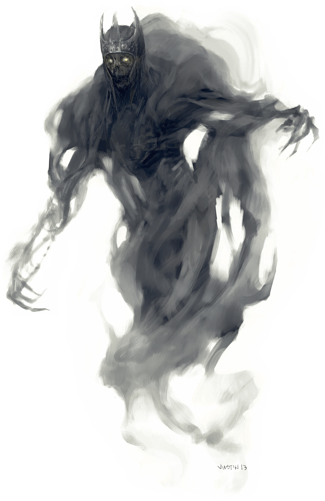

Wraith

A wraith is malice incarnate, concentrated into an incorporeal form that seeks to quench all life. The creature is suffused with negative energy, and its mere passage through the world leaves nearby plants blackened and withered. Animals flee from its presence. Even small fires can be extinguished by the sucking oblivion of the wraith's horrifying existence.
Vile Oblivion. When a mortal humanoid lives a debased life or enters into a fiendish pact, it consigns its soul to eternal damnation in the Lower Planes. However, sometimes the soul becomes so suffused with negative energy that it collapses in on itself and ceases to exist the instant before it can shuffle off to some horrible afterlife. When this occurs, the spirit becomes a soulless wraith — a malevolent void trapped on the plane where it died. Almost nothing of the wraith's former existence is preserved; in this new form, it exists only to annihilate other life.
Bereft of Body. A wraith can move through solid creatures and objects as easily as a mortal creature moves through fog.
A wraith might retain a few memories of its mortal life as shadowy echoes. However, even the strongest events and emotions become little more than faint impressions, fleeting as half-remembered dreams. A wraith might pause to stare at something that fascinated it in life, or it might curb its wrath in acknowledgment of a past friendship. Such moments come rarely, however, because most wraiths despise what they were as a reminder of what they have become.
Undead Commanders. A wraith can make an undead servant from the spirit of a humanoid creature that has recently suffered a violent death. Such a fragment of woe becomes a specter, spiteful of all that lives.
Wraiths sometimes rule the legions of the dead, plotting the doom of living creatures. When they emerge from their tombs to do battle, life and hope shrivel before them. Even if a wraith's armies are forced to retreat, the lands its forces occupied are so blasted and withered that those who live there often starve and die.
Undead Nature. A wraith doesn't require air, food, drink, or sleep.
Wraith
Medium Undead, Neutral Evil
- Armor Class 13
- Hit Points 67 (9d8 + 27)
- Speed 0 ft., fly 60 ft. (hover)
STR DEX CON INT WIS CHA 6 (-2) 16 (+3) 16 (+3) 12 (+1) 14 (+2) 15 (+2)
- Proficiency Bonus +3
- Saving Throws
- Damage Vulnerabilities
- Damage Resistances Acid,Cold,Fire,Lightning,Thunder; Bludgeoning,Piercing,and Slashing from Nonmagical Attacks that aren't Silvered
- Damage Immunities Necrotic,Poison
- Condition Immunities Charmed,Exhaustion,Grappled,Paralyzed,Petrified,Poisoned,Prone,Restrained
- Skills
- Senses Darkvision 60 ft.,Passive Perception 12
- Languages The languages it knew in life
- Challenge 5
Incorporeal Movement. The wraith can move through other creatures and objects as if they were difficult terrain. It takes 5 (1d10) force damage if it ends its turn inside an object.
Sunlight Sensitivity. While in sunlight, the wraith has disadvantage on attack rolls, as well as on Wisdom (Perception) checks that rely on sight.
Actions
Life Drain. Melee Weapon Attack: +6 to hit, reach 5 ft., one creature. Hit: 21 (4d8 + 3) necrotic damage. The target must succeed on a DC 14 Constitution saving throw or its hit point maximum is reduced by an amount equal to the damage taken. This reduction lasts until the target finishes a long rest. The target dies if this effect reduces its hit point maximum to 0.
Create Specter. The wraith targets a humanoid within 10 feet of it that has been dead for no longer than 1 minute and died violently. The target's spirit rises as a specter in the space of its corpse or in the nearest unoccupied space. The specter is under the wraith's control. The wraith can have no more than seven specter under its control at one time.